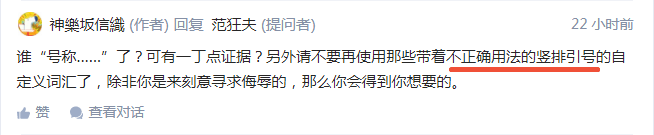
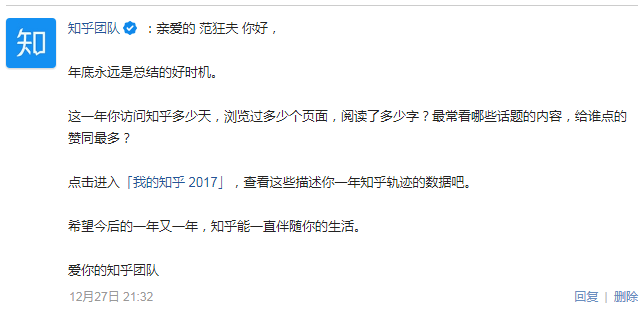
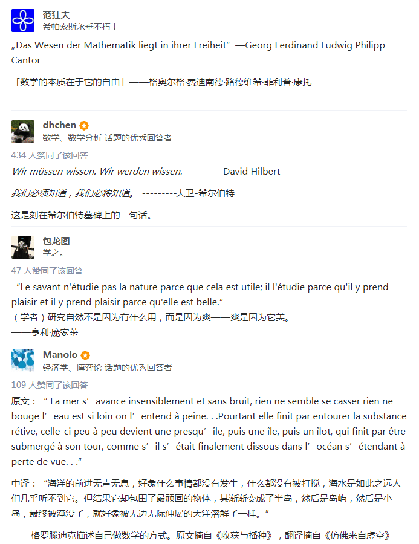

回复
还是召唤设置为不可邀请的@神樂坂信織朋友回答本话题，注意本话题与政治和意识形态都没有关系，与知乎站方推荐标准似乎有些关系。
那么，我使用「方引号」的行为，先不管客观上正确与否，主观上究竟是「入乡随俗」紧密团结在知乎站中央周围呢还是「妄议中央顶风作案」？
缘起还是因为看到使用繁体汉字日式姓名帐号的朋友@神樂坂信織指责「方引号」是「不正确用法」：
 方引号の「不正确用法」 但是呢，在之前几天，想必所有知乎网友都收到了站方短信「我的知乎2017」：
 知乎的方引号 这个嘛，从「学术」角度讲，我中华天朝上国近代传统标点符号当中就惯用「方引号」，无论是竖排还是横排，并且除了单双之外，还有三层夹心和实心两种不常用的方引号。
至于为啥后来境内「国家通用语言文字委员会」规定了「盎格鲁萨克森传统风俗习惯」的冰凌悬垂式单双引号为规范，把「弘扬中华民族传统文化的阵地」留给了日本和台湾，那就不是我等贱种屁民可以妄议中央的了。
莫谈国事，看看境外的情况，比方说这个问题「你最喜欢的一句数学界的名言是什么？」当中的各种「原文」，摘抄几段如下：
 以德治引号和依法治引号 其中，第一条，@范狂夫所使用的德语引号是当代「德意志民族神圣罗马帝国」官方钦定的正字法当中规定的用法，若是没有德语键盘，还可以使用「Alt」＋数字小键盘「132」和「147」输入。
第二条，旅居「德意志民族神圣罗马帝国」的@dhchen先生在引言用没有使用引号，而是用了斜体表示。这个斜体，通常是代替书名号的，众所周知「盎格鲁萨克森传统风俗习惯」的正字法当中没有书名号。
后面两条，还特意注明了「原文」字样的法文，却没有使用法语引号「«»」，这又是怎么回事呢？召唤@包龙图和@Manolo朋友莅临指导。如果是键盘缘故，可以使用「Alt」＋数字小键盘「171」和「187」输入。
顺便，在纯文本环境或排版不方便的场合，对于字母序列当中的书名、文章名、篇名等等，我个人还是习惯使用法语引号代替「盎格鲁萨克森传统风俗习惯正字法」当中缺少的「书名号」的，各位精通法语的朋友看见的时候可能会莫名惊诧，特此声明。
还是召唤设置为不可邀请的@神樂坂信織朋友回答本话题，注意本话题与政治和意识形态都没有关系，与知乎站方推荐标准似乎有些关系。
那么，我使用「方引号」的行为，先不管客观上正确与否，主观上究竟是「入乡随俗」紧密团结在知乎站中央周围呢还是「妄议中央顶风作案」？